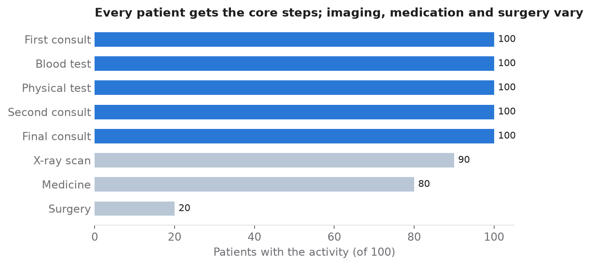
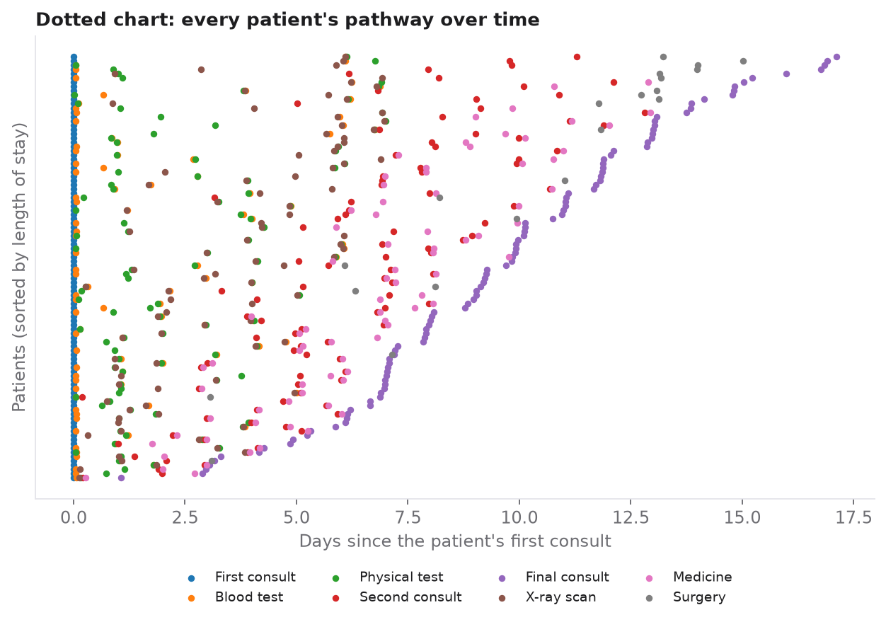
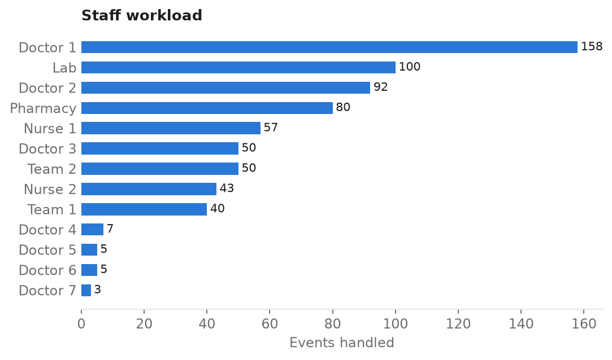
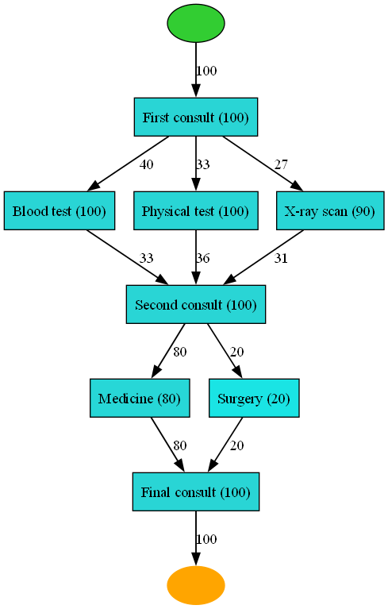
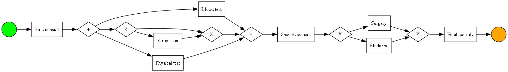
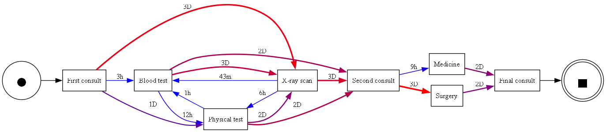

The goal
Hospital information systems record every consultation, test and treatment as an event. Process mining turns these logs into a picture of how care actually happens: which paths patients take, where time is lost and how work is spread across the staff.
The event log has four fields per event: the patient, the activity (for example blood test, X-ray/MRI or surgery), the responsible resource (a doctor, nurse, lab or team) and the timestamp. The log is artificial and was created for teaching, so the results illustrate the method rather than a real hospital.
Exploring the event log
Every patient went through the full pathway, from the first consult to the final consult. Blood tests and physical examinations were done for everyone, while surgery, imaging and medication were not.

The dotted chart places every event on a timeline, one row per patient. It shows a steady flow of cases, and it shows that blood tests and physical examinations happen early in the stay with little variation. Early morning and late afternoon are the quietest hours.


Discovering the process
The heuristic net shows how often each activity occurs and how often one follows another. Every pathway starts with the first consult. Patients then go through blood tests, physical examinations and, for 90 of them, an X-ray/MRI. After the second consult the path splits: 80 patients receive medication and 20 undergo surgery. Everyone finishes with the final consult.

The BPMN model, derived from the inductive miner's process tree, makes the logic explicit. The examinations after the first consult run in parallel, and the step after the second consult is an exclusive choice between medication and surgery.

Where time is spent
The time-based directly-follows graph shows the average time between steps. These are the points where the care pathway could be shortened.

| Transition | Average time |
|---|---|
| First consult → X-ray/MRI | 3 days |
| Second consult → surgery | 3 days |
| Blood test → second consult | 2 days |
| Medication or surgery → final consult | 2 days |
| First consult → physical test | 1 day |
| Second consult → medication | 9 hours |
| Physical test → X-ray/MRI | 6 hours |
| Physical test → blood test | 1 hour |
| X-ray/MRI → blood test | 43 minutes |
Waiting for imaging and for surgery, at about three days each, are the longest gaps in the pathway.
Comparing discovery algorithms
Different miners build different models from the same log. I compared them on the four standard quality dimensions.
| Miner | Fitness | Precision | Generalization | Simplicity |
|---|---|---|---|---|
| Alpha miner | 0.990 | 0.983 | 0.882 | 0.818 |
| Inductive miner | 1.000 | 0.984 | 0.860 | 0.760 |
| Heuristic miner | 0.990 | 0.983 | 0.882 | 0.818 |
The inductive miner reproduces the log perfectly (fitness 1.000) with the highest precision, but its model is more complex and generalises slightly less well. The alpha and heuristic miners produce simpler, better-generalising models with almost the same fit. The right choice depends on which quality dimension matters most for the project.
Conclusions
Process mining reconstructs the typical care pathway from raw log data: a first consult, parallel examinations, a second consult, then medication or surgery, and a final consult. Core examinations are universal, specialised care depends on the case, and the key decision point comes after the second consult.
The time-based models show where throughput time could be cut, and the workload analysis shows how unevenly work is spread across staff. Applied to real hospital data, the same approach could help make care processes faster and more efficient.
Limitation. The event log is artificial and was created for teaching, so the findings demonstrate the method rather than describe a real hospital.